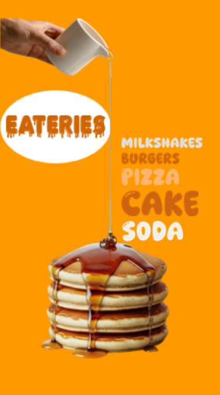
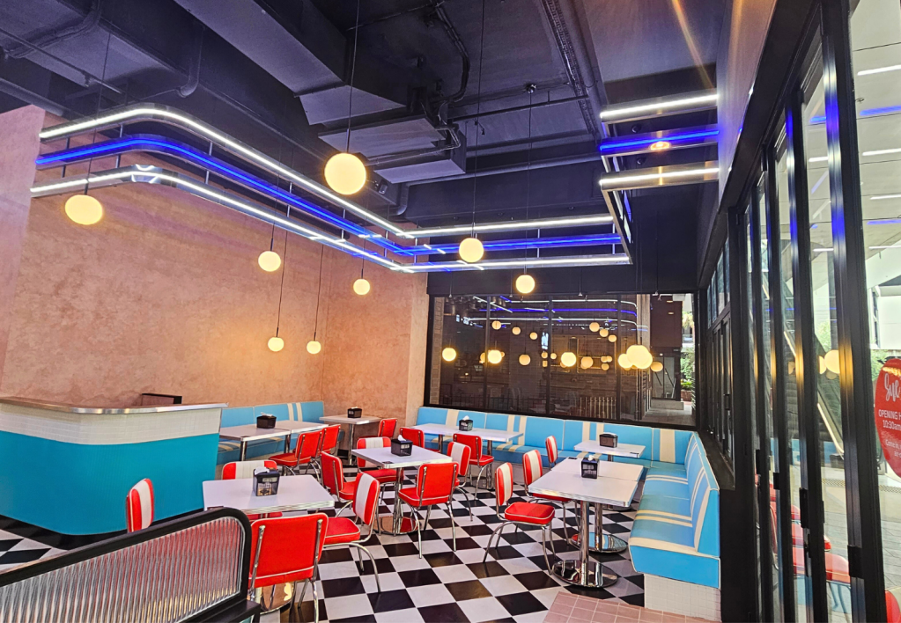

Sue's Burgers and Milkshakes

Woolloongabba | Carindale
An American diner themed aesthetic with retro furniture, music and street art in two different locations. Alongside this, diner themed food is served including, tasty milkshakes, juicy burgers, trendy fried chicken and packed loaded fries. Having blown up on Tik Tok for their fried chicken packs, this is a trendy hotspot, ideal for teenagers both as a group and on a solo trip!
ExploreThe Pancake Manor

Brisbane City
Held in a refurbished old and stunning Church, this heart warming restaurant has a wide range of delicious food for any group or individual. The menu includes pancakes, waffles, breakfast items, milkshakes, nachos and much much more! Whether you have a sweet tooth or are after a hearty meal, this is the place for you, ideal for teenagers who want to find the go to spot.
Explore